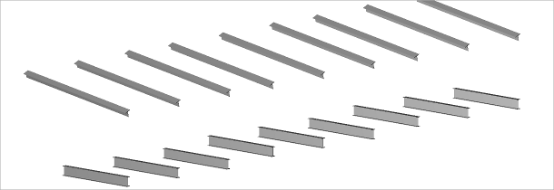
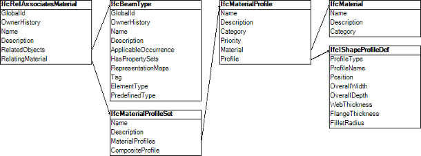
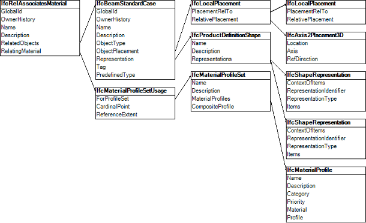

Annex E
(informative)
Examples
E.4.2 - Beam Parametric Cross Section
Example overview
Additional test cases not yet allocated to individual test case groups.
An IfcBeam is a commonly exchanged with a parametric definitions of the cross section shape.
The example includes the local placement, the body shape representation, the material profile set assignment, the beam occurrence and beam type definitions. The focus points are the use of cardinal points to align the beam profile to the axis, the use of parametric profile definitions and the assignment of material information to the profile.




The beam 'A-9' in Figure E.B is an occurrence of the 'IPE220' type having an I-Shape profile, placed along an axis using the upper-right cardinal point.
The example in Figure E.A declares two parametric beam types, one with an I-Shape profile and the other with a T-Shape profile. Each type has nine occurrences, using various cardinal points to align the profiles.
The cardinal point of the beam 'A-9' is set to the upper-right, indicating that the 'Body' representation should be generated with the upper-right of the profile aligned along the curve of the 'Axis representation.
The 'IPE220' beam type in Figure E.C is represented by IfcBeamType. As a parametric definition, this beam type does not have any geometric representation, rather it has a material profile set association indicating a cross-section which may be applied to paths defined at occurrences.
Each beam occurrence as in Figure E.D is represented by IfcBeam. The IfcMaterialProfileSetUsage entity indicates the alignment of the material profile set according to cardinal point. The IfcMaterialProfileSet indicates a single material profile. The IfcMaterialProfile indicates an I-Shape cross-section of steel. The IfcIShapeProfileDef indicates shape parameters of the I-Shape profile. The IfcMaterial indicates the steel material, which could be further elaborated with structural properties, surface styles, and fill area styles.
IFC-SPF source
ISO-10303-21;
HEADER;
/* NOTE a valid model view name has to be asserted, replacing 'notYetAssigned' ----------------- */
FILE_DESCRIPTION(
( 'ViewDefinition [notYetAssigned]'
,'Comment [manual creation of example file]'
)
,'2;1');
/* NOTE standard header information according to ISO 10303-21 ---------------------------------- */
FILE_NAME(
'beam-parametric-cross-section.ifc',
'2011-11-07T18:00:00',
('redacted'),
('redacted'),
'redacted',
'redacted',
'reference file created for the IFC4 specification');
FILE_SCHEMA(('IFC4X3_ADD2'));
ENDSEC;
DATA;
#100= IFCBEAMTYPE('0juf4qyggSstrxA20Qwnsj',$,'IPE220','Beam type',$,$,$,$,$,.BEAM.);
/* enhanced definitions intruduced in IFC2x4 ------------------------------- */
/* assignment of material and profile to the beam type */
#110= IFCRELASSOCIATESMATERIAL('0juf4qyggSstrxA20Q49sj',$,$,$,(#100),#111);
#111= IFCMATERIALPROFILESET($,$,(#112),$);
#112= IFCMATERIALPROFILE('IPE220',$,#113,#120,$,$);
#113= IFCMATERIAL('S275J2',$,'Steel');
/* end of enhanced definitions --------------------------------------------- */
#120= IFCISHAPEPROFILEDEF(.AREA.,'IPE220',$,110.,220.,5.9,9.2,12.0,$,$);
#200= IFCBEAMTYPE('0juf4qyggSstrxA20Qdisj',$,'1/2IPE300','Beam type',$,$,$,$,$,.BEAM.);
/* enhanced definitions intruduced in IFC2x4 ------------------------------- */
/* assignment of material and profile to the beam type */
#210= IFCRELASSOCIATESMATERIAL('0juf4qyggSstrxA20Q2fsj',$,$,$,(#200),#211);
#211= IFCMATERIALPROFILESET($,$,(#212),$);
#212= IFCMATERIALPROFILE('1/2IPE300',$,#213,#220,$,$);
#213= IFCMATERIAL('S275J2',$,'Steel');
/* end of enhanced definitions --------------------------------------------- */
#220= IFCTSHAPEPROFILEDEF(.AREA.,'1/2IPE300',$,150.0,150.0,7.1,10.7,15.0,$,$,$,$);
/* beam A-1 - beam axis along global x axis -------------------------------- */
/* cardinal point = 1 - bottom left */
#1000= IFCBEAM('0juf4qyggSI8rxA20Qwnsj',$,'A-1','IPE220','Beam',#1001,#1010,'A-1',$);
#1001= IFCLOCALPLACEMENT(#100025,#1002);
/* set local placement so that the z-axis is co-linear to the beam axis ---- */
/* the y-axis (cross product of x & z axis) is up direction of profile ----- */
#1002= IFCAXIS2PLACEMENT3D(#1003,#1004,#1005);
#1003= IFCCARTESIANPOINT((0.,0.,0.));
#1004= IFCDIRECTION((1.,0.,0.)); /* local z-axis co-linear to beam axis */
#1005= IFCDIRECTION((0.,1.,0.)); /* local x-axis */
#1010= IFCPRODUCTDEFINITIONSHAPE($,$,(#1050,#1020));
#1020= IFCSHAPEREPRESENTATION(#100011,'Body','SweptSolid',(#1021));
#1021= IFCEXTRUDEDAREASOLID(#120,#1030,#1034,2000.);
/* extrusion body is placed with no rotation inside local placement -------- */
/* extrusion position z = default = (0.,0.,1.),x = default = (1.,0.,0.) */
/* translation provides the cardinal point offset -------------------------- */
#1030= IFCAXIS2PLACEMENT3D(#1031,$,$);
#1031= IFCCARTESIANPOINT((-55.0,110.0,0.)); /* defines cardinal point 1 */
#1034= IFCDIRECTION((0.,0.,1.));
/* enhanced definitions intruduced in IFC2x4 ------------------------------- */
/* assignment of material and cardinal point to the beam occurrence */
#1040= IFCRELASSOCIATESMATERIAL('0juf4qyggSstrxA20QfZsj',$,$,$,(#1000),#1041);
#1041= IFCMATERIALPROFILESETUSAGE(#111,1,$);
/* end of enhanced definitions --------------------------------------------- */
#1050= IFCSHAPEREPRESENTATION(#100011,'Axis','Curve3D',(#1051));
#1051= IFCPOLYLINE((#1052,#1053));
#1052= IFCCARTESIANPOINT((0.,0.,0.));
#1053= IFCCARTESIANPOINT((0.,0.,2000.));
/* beam A-2 - beam axis along global x axis -------------------------------- */
/* cardinal point = 2 - bottom center */
#1100= IFCBEAM('0juf4qyggSI8rxA20sznsj',$,'A-2','IPE220','Beam',#1101,#1110,'A-2',$);
#1101= IFCLOCALPLACEMENT(#100025,#1102);
/* set local placement so that the z-axis is co-linear to the beam axis ---- */
/* the y-axis (cross product of x & z axis) is up direction of profile ----- */
#1102= IFCAXIS2PLACEMENT3D(#1103,#1104,#1105);
#1103= IFCCARTESIANPOINT((0.,1500.,0.));
#1104= IFCDIRECTION((1.,0.,0.)); /* local z-axis co-linear to beam axis */
#1105= IFCDIRECTION((0.,1.,0.)); /* local x-axis */
#1110= IFCPRODUCTDEFINITIONSHAPE($,$,(#1150,#1120));
#1120= IFCSHAPEREPRESENTATION(#100011,'Body','SweptSolid',(#1121));
#1121= IFCEXTRUDEDAREASOLID(#120,#1130,#1134,2000.);
/* extrusion body is placed with no rotation inside local placement -------- */
/* extrusion position z = default = (0.,0.,1.),x = default = (1.,0.,0.) */
/* translation provides the cardinal point offset -------------------------- */
#1130= IFCAXIS2PLACEMENT3D(#1131,$,$);
#1131= IFCCARTESIANPOINT((0.,110.0,0.)); /* defines cardinal point 2 */
#1134= IFCDIRECTION((0.,0.,1.));
/* enhanced definitions intruduced in IFC2x4 ------------------------------- */
/* assignment of material and cardinal point to the beam occurrence */
#1140= IFCRELASSOCIATESMATERIAL('0juf4qyggSstrxA20QgAsj',$,$,$,(#1100),#1141);
#1141= IFCMATERIALPROFILESETUSAGE(#111,2,$);
/* end of enhanced definitions --------------------------------------------- */
#1150= IFCSHAPEREPRESENTATION(#100011,'Axis','Curve3D',(#1151));
#1151= IFCPOLYLINE((#1152,#1153));
#1152= IFCCARTESIANPOINT((0.,0.,0.));
#1153= IFCCARTESIANPOINT((0.,0.,2000.));
/* beam A-3 - beam axis along global x axis -------------------------------- */
/* cardinal point = 3 - bottom right */
#1200= IFCBEAM('0juf4qyggSI8s4A20sznsj',$,'A-3','IPE220','Beam',#1201,#1210,'A-3',$);
#1201= IFCLOCALPLACEMENT(#100025,#1202);
/* set local placement so that the z-axis is co-linear to the beam axis ---- */
/* the y-axis (cross product of x & z axis) is up direction of profile ----- */
#1202= IFCAXIS2PLACEMENT3D(#1203,#1204,#1205);
#1203= IFCCARTESIANPOINT((0.,3000.,0.));
#1204= IFCDIRECTION((1.,0.,0.)); /* local z-axis co-linear to beam axis */
#1205= IFCDIRECTION((0.,1.,0.)); /* local x-axis */
#1210= IFCPRODUCTDEFINITIONSHAPE($,$,(#1250,#1220));
#1220= IFCSHAPEREPRESENTATION(#100011,'Body','SweptSolid',(#1221));
#1221= IFCEXTRUDEDAREASOLID(#120,#1230,#1234,2000.);
/* extrusion body is placed with no rotation inside local placement -------- */
/* extrusion position z = default = (0.,0.,1.),x = default = (1.,0.,0.) */
/* translation provides the cardinal point offset -------------------------- */
#1230= IFCAXIS2PLACEMENT3D(#1231,$,$);
#1231= IFCCARTESIANPOINT((55.0,110.0,0.)); /* defines cardinal point 3 */
#1234= IFCDIRECTION((0.,0.,1.));
/* enhanced definitions intruduced in IFC2x4 ------------------------------- */
/* assignment of material and cardinal point to the beam occurrence */
#1240= IFCRELASSOCIATESMATERIAL('3x0gFSPAr5puQ5WI22xYOm',$,$,$,(#1200),#1241);
#1241= IFCMATERIALPROFILESETUSAGE(#111,3,$);
/* end of enhanced definitions --------------------------------------------- */
#1250= IFCSHAPEREPRESENTATION(#100011,'Axis','Curve3D',(#1251));
#1251= IFCPOLYLINE((#1252,#1253));
#1252= IFCCARTESIANPOINT((0.,0.,0.));
#1253= IFCCARTESIANPOINT((0.,0.,2000.));
/* beam A-4 - beam axis along global x axis -------------------------------- */
/* cardinal point = 3 - bottom right */
#1300= IFCBEAM('0juf4qyggSI8s4A20sznw6',$,'A-4','IPE220','Beam',#1301,#1310,'A-4',$);
#1301= IFCLOCALPLACEMENT(#100025,#1302);
/* set local placement so that the z-axis is co-linear to the beam axis ---- */
/* the y-axis (cross product of x & z axis) is up direction of profile ----- */
#1302= IFCAXIS2PLACEMENT3D(#1303,#1304,#1305);
#1303= IFCCARTESIANPOINT((0.,4500.,0.));
#1304= IFCDIRECTION((1.,0.,0.)); /* local z-axis co-linear to beam axis */
#1305= IFCDIRECTION((0.,1.,0.)); /* local x-axis */
#1310= IFCPRODUCTDEFINITIONSHAPE($,$,(#1350,#1320));
#1320= IFCSHAPEREPRESENTATION(#100011,'Body','SweptSolid',(#1321));
#1321= IFCEXTRUDEDAREASOLID(#120,#1330,#1334,2000.);
/* extrusion body is placed with no rotation inside local placement -------- */
/* extrusion position z = default = (0.,0.,1.),x = default = (1.,0.,0.) */
/* translation provides the cardinal point offset -------------------------- */
#1330= IFCAXIS2PLACEMENT3D(#1331,$,$);
#1331= IFCCARTESIANPOINT((-55.0,0.,0.)); /* defines cardinal point 4 */
#1334= IFCDIRECTION((0.,0.,1.));
/* enhanced definitions intruduced in IFC2x4 ------------------------------- */
/* assignment of material and cardinal point to the beam occurrence */
#1340= IFCRELASSOCIATESMATERIAL('0juf4qyggSstrxA20QOHsj',$,$,$,(#1300),#1341);
#1341= IFCMATERIALPROFILESETUSAGE(#111,4,$);
/* end of enhanced definitions --------------------------------------------- */
#1350= IFCSHAPEREPRESENTATION(#100011,'Axis','Curve3D',(#1351));
#1351= IFCPOLYLINE((#1352,#1353));
#1352= IFCCARTESIANPOINT((0.,0.,0.));
#1353= IFCCARTESIANPOINT((0.,0.,2000.));
/* beam A-5 - beam axis along global x axis -------------------------------- */
/* cardinal point = 5 - mid-depth center */
#1400= IFCBEAM('0juf4qyggSI8rxA20Qwnab',$,'A-5','IPE220','Beam',#1401,#1410,'A-5',$);
#1401= IFCLOCALPLACEMENT(#100025,#1402);
/* set local placement so that the z-axis is co-linear to the beam axis ---- */
/* the y-axis (cross product of x & z axis) is up direction of profile ----- */
#1402= IFCAXIS2PLACEMENT3D(#1403,#1404,#1405);
#1403= IFCCARTESIANPOINT((0.,6000.,0.));
#1404= IFCDIRECTION((1.,0.,0.)); /* local z-axis co-linear to beam axis */
#1405= IFCDIRECTION((0.,1.,0.)); /* local x-axis */
#1410= IFCPRODUCTDEFINITIONSHAPE($,$,(#1450,#1420));
#1420= IFCSHAPEREPRESENTATION(#100011,'Body','SweptSolid',(#1421));
#1421= IFCEXTRUDEDAREASOLID(#120,#1430,#1434,2000.);
/* extrusion body is placed with no rotation inside local placement -------- */
/* extrusion position z = default = (0.,0.,1.),x = default = (1.,0.,0.) */
/* translation provides the cardinal point offset -------------------------- */
#1430= IFCAXIS2PLACEMENT3D(#1431,$,$);
#1431= IFCCARTESIANPOINT((0.,0.,0.)); /* defines cardinal point 5 */
#1434= IFCDIRECTION((0.,0.,1.));
/* enhanced definitions intruduced in IFC2x4 ------------------------------- */
/* assignment of material and cardinal point to the beam occurrence */
#1440= IFCRELASSOCIATESMATERIAL('0juf4qyggSstrxA20QRLsj',$,$,$,(#1400),#1441);
#1441= IFCMATERIALPROFILESETUSAGE(#111,5,$);
/* end of enhanced definitions --------------------------------------------- */
#1450= IFCSHAPEREPRESENTATION(#100011,'Axis','Curve3D',(#1451));
#1451= IFCPOLYLINE((#1452,#1453));
#1452= IFCCARTESIANPOINT((0.,0.,0.));
#1453= IFCCARTESIANPOINT((0.,0.,2000.));
/* beam A-6 - beam axis along global x axis -------------------------------- */
/* cardinal point = 6 - mid-depth right */
#1500= IFCBEAM('0juf4qyggSI8rxA20Qwng1',$,'A-6','IPE220','Beam',#1501,#1510,'A-6',$);
#1501= IFCLOCALPLACEMENT(#100025,#1502);
/* set local placement so that the z-axis is co-linear to the beam axis ---- */
/* the y-axis (cross product of x & z axis) is up direction of profile ----- */
#1502= IFCAXIS2PLACEMENT3D(#1503,#1504,#1505);
#1503= IFCCARTESIANPOINT((0.,7500.,0.));
#1504= IFCDIRECTION((1.,0.,0.)); /* local z-axis co-linear to beam axis */
#1505= IFCDIRECTION((0.,1.,0.)); /* local x-axis */
#1510= IFCPRODUCTDEFINITIONSHAPE($,$,(#1550,#1520));
#1520= IFCSHAPEREPRESENTATION(#100011,'Body','SweptSolid',(#1521));
#1521= IFCEXTRUDEDAREASOLID(#120,#1530,#1534,2000.);
/* extrusion body is placed with no rotation inside local placement -------- */
/* extrusion position z = default = (0.,0.,1.),x = default = (1.,0.,0.) */
/* translation provides the cardinal point offset -------------------------- */
#1530= IFCAXIS2PLACEMENT3D(#1531,$,$);
#1531= IFCCARTESIANPOINT((55.0,0.,0.)); /* defines cardinal point 6 */
#1534= IFCDIRECTION((0.,0.,1.));
/* enhanced definitions intruduced in IFC2x4 ------------------------------- */
/* assignment of material and cardinal point to the beam occurrence */
#1540= IFCRELASSOCIATESMATERIAL('0juf4qyggSstrxA20QMmsj',$,$,$,(#1500),#1541);
#1541= IFCMATERIALPROFILESETUSAGE(#111,6,$);
/* end of enhanced definitions --------------------------------------------- */
#1550= IFCSHAPEREPRESENTATION(#100011,'Axis','Curve3D',(#1551));
#1551= IFCPOLYLINE((#1552,#1553));
#1552= IFCCARTESIANPOINT((0.,0.,0.));
#1553= IFCCARTESIANPOINT((0.,0.,2000.));
/* beam A-7 - beam axis along global x axis -------------------------------- */
/* cardinal point = 7 - top left */
#1600= IFCBEAM('0juf4qyggSI8rxA20Qwn3s',$,'A-7','IPE220','Beam',#1601,#1610,'A-7',$);
#1601= IFCLOCALPLACEMENT(#100025,#1602);
/* set local placement so that the z-axis is co-linear to the beam axis ---- */
/* the y-axis (cross product of x & z axis) is up direction of profile ----- */
#1602= IFCAXIS2PLACEMENT3D(#1603,#1604,#1605);
#1603= IFCCARTESIANPOINT((0.,9000.,0.));
#1604= IFCDIRECTION((1.,0.,0.)); /* local z-axis co-linear to beam axis */
#1605= IFCDIRECTION((0.,1.,0.)); /* local x-axis */
#1610= IFCPRODUCTDEFINITIONSHAPE($,$,(#1650,#1620));
#1620= IFCSHAPEREPRESENTATION(#100011,'Body','SweptSolid',(#1621));
#1621= IFCEXTRUDEDAREASOLID(#120,#1630,#1634,2000.);
/* extrusion body is placed with no rotation inside local placement -------- */
/* extrusion position z = default = (0.,0.,1.),x = default = (1.,0.,0.) */
/* translation provides the cardinal point offset -------------------------- */
#1630= IFCAXIS2PLACEMENT3D(#1631,$,$);
#1631= IFCCARTESIANPOINT((-55.0,-110.0,0.)); /* defines cardinal point 7 */
#1634= IFCDIRECTION((0.,0.,1.));
/* enhanced definitions intruduced in IFC2x4 ------------------------------- */
/* assignment of material and cardinal point to the beam occurrence */
#1640= IFCRELASSOCIATESMATERIAL('0juf4qyggSstrxA20Qh4sj',$,$,$,(#1600),#1641);
#1641= IFCMATERIALPROFILESETUSAGE(#111,7,$);
/* end of enhanced definitions --------------------------------------------- */
#1650= IFCSHAPEREPRESENTATION(#100011,'Axis','Curve3D',(#1651));
#1651= IFCPOLYLINE((#1652,#1653));
#1652= IFCCARTESIANPOINT((0.,0.,0.));
#1653= IFCCARTESIANPOINT((0.,0.,2000.));
/* beam A-8 - beam axis along global x axis -------------------------------- */
/* cardinal point = 8 - top center */
#1700= IFCBEAM('0juf4qyggSI8rxA20Qwnlq',$,'A-8','IPE220','Beam',#1701,#1710,'A-8',$);
#1701= IFCLOCALPLACEMENT(#100025,#1702);
/* set local placement so that the z-axis is co-linear to the beam axis ---- */
/* the y-axis (cross product of x & z axis) is up direction of profile ----- */
#1702= IFCAXIS2PLACEMENT3D(#1703,#1704,#1705);
#1703= IFCCARTESIANPOINT((0.,10500.,0.));
#1704= IFCDIRECTION((1.,0.,0.)); /* local z-axis co-linear to beam axis */
#1705= IFCDIRECTION((0.,1.,0.)); /* local x-axis */
#1710= IFCPRODUCTDEFINITIONSHAPE($,$,(#1750,#1720));
#1720= IFCSHAPEREPRESENTATION(#100011,'Body','SweptSolid',(#1721));
#1721= IFCEXTRUDEDAREASOLID(#120,#1730,#1734,2000.);
/* extrusion body is placed with no rotation inside local placement -------- */
/* extrusion position z = default = (0.,0.,1.),x = default = (1.,0.,0.) */
/* translation provides the cardinal point offset -------------------------- */
#1730= IFCAXIS2PLACEMENT3D(#1731,$,$);
#1731= IFCCARTESIANPOINT((0.,-110.0,0.)); /* defines cardinal point 7 */
#1734= IFCDIRECTION((0.,0.,1.));
/* enhanced definitions intruduced in IFC2x4 ------------------------------- */
/* assignment of material and cardinal point to the beam occurrence */
#1740= IFCRELASSOCIATESMATERIAL('0juf4qyggSstrxA20QwKsj',$,$,$,(#1700),#1741);
#1741= IFCMATERIALPROFILESETUSAGE(#111,8,$);
/* end of enhanced definitions --------------------------------------------- */
#1750= IFCSHAPEREPRESENTATION(#100011,'Axis','Curve3D',(#1751));
#1751= IFCPOLYLINE((#1752,#1753));
#1752= IFCCARTESIANPOINT((0.,0.,0.));
#1753= IFCCARTESIANPOINT((0.,0.,2000.));
/* beam A-9 - beam axis along global x axis -------------------------------- */
/* cardinal point = 9 - top right */
#1800= IFCBEAM('0juf4qyggSI8s4A20sznrt',$,'A-9','IPE220','Beam',#1801,#1810,'A-9',$);
#1801= IFCLOCALPLACEMENT(#100025,#1802);
/* set local placement so that the z-axis is co-linear to the beam axis ---- */
/* the y-axis (cross product of x & z axis) is up direction of profile ----- */
#1802= IFCAXIS2PLACEMENT3D(#1803,#1804,#1805);
#1803= IFCCARTESIANPOINT((0.,12000.,0.));
#1804= IFCDIRECTION((1.,0.,0.)); /* local z-axis co-linear to beam axis */
#1805= IFCDIRECTION((0.,1.,0.)); /* local x-axis */
#1810= IFCPRODUCTDEFINITIONSHAPE($,$,(#1850,#1820));
#1820= IFCSHAPEREPRESENTATION(#100011,'Body','SweptSolid',(#1821));
#1821= IFCEXTRUDEDAREASOLID(#120,#1830,#1834,2000.);
/* extrusion body is placed with no rotation inside local placement -------- */
/* extrusion position z = default = (0.,0.,1.),x = default = (1.,0.,0.) */
/* translation provides the cardinal point offset -------------------------- */
#1830= IFCAXIS2PLACEMENT3D(#1831,$,$);
#1831= IFCCARTESIANPOINT((55.0,-110.0,0.)); /* defines cardinal point 9 */
#1834= IFCDIRECTION((0.,0.,1.));
/* enhanced definitions intruduced in IFC2x4 ------------------------------- */
/* assignment of material and cardinal point to the beam occurrence */
#1840= IFCRELASSOCIATESMATERIAL('0juf4qyggSstrxA20QJksj',$,$,$,(#1800),#1841);
#1841= IFCMATERIALPROFILESETUSAGE(#111,9,$);
/* end of enhanced definitions --------------------------------------------- */
#1850= IFCSHAPEREPRESENTATION(#100011,'Axis','Curve3D',(#1851));
#1851= IFCPOLYLINE((#1852,#1853));
#1852= IFCCARTESIANPOINT((0.,0.,0.));
#1853= IFCCARTESIANPOINT((0.,0.,2000.));
/* beam B-1 - beam axis along global x axis -------------------------------- */
/* cardinal point = 1 - bottom left */
#2000=IFCBEAM('3QbcAsYoB7Hvx$4VHzijYi',$,'B-1','1/2IPE300','Beam',#2001,#2010,'B-1',$);
#2001=IFCLOCALPLACEMENT(#100025,#2002);
/* set local placement so that the z-axis is co-linear to the beam axis ---- */
/* the y-axis (cross product of x & z axis) is up direction of profile ----- */
#2002=IFCAXIS2PLACEMENT3D(#2003,#2004,#2005);
#2003=IFCCARTESIANPOINT((0.,0.,1500.));
#2004=IFCDIRECTION((0.98,0.081,0.182)); /* local z-axis co-linear to beam axis */
#2005=IFCDIRECTION((-0.0001,0.9138,-0.40616)); /* local x-axis */
#2010=IFCPRODUCTDEFINITIONSHAPE($,$,(#2050,#2020));
#2020=IFCSHAPEREPRESENTATION(#100011,'Body','SweptSolid',(#2021));
#2021=IFCEXTRUDEDAREASOLID(#220,#2030,#2034,3000.);
/* extrusion body is placed with no rotation inside local placement -------- */
/* translation provides the cardinal point offset -------------------------- */
#2030=IFCAXIS2PLACEMENT3D(#2031,$,$);
#2031=IFCCARTESIANPOINT((-75.0,75.0,0.)); /* defines cardinal point 1 */
#2034=IFCDIRECTION((0.,0.,1.));
/* enhanced definitions intruduced in IFC2x4 ------------------------------- */
/* assignment of material and cardinal point to the beam occurrence */
#2040= IFCRELASSOCIATESMATERIAL('0juf4qyggSstrxA20QbFsj',$,$,$,(#2000),#2041);
#2041= IFCMATERIALPROFILESETUSAGE(#211,1,$);
/* end of enhanced definitions --------------------------------------------- */
#2050= IFCSHAPEREPRESENTATION(#100011,'Axis','Curve3D',(#2051));
#2051= IFCPOLYLINE((#2052,#2053));
#2052= IFCCARTESIANPOINT((0.,0.,0.));
#2053= IFCCARTESIANPOINT((0.,0.,3000.));
/* beam B-2 - beam axis along global x axis -------------------------------- */
/* cardinal point = 2 - bottom center */
#2100=IFCBEAM('3Qb5gsYoB7Hvx$4VHzijYi',$,'B-2','1/2IPE300','Beam',#2101,#2110,'B-2',$);
#2101=IFCLOCALPLACEMENT(#100025,#2102);
/* set local placement so that the z-axis is co-linear to the beam axis ---- */
/* the y-axis (cross product of x & z axis) is up direction of profile ----- */
#2102=IFCAXIS2PLACEMENT3D(#2103,#2104,#2105);
#2103=IFCCARTESIANPOINT((0.,1500.,1500.));
#2104=IFCDIRECTION((0.98,0.081,0.182)); /* local z-axis co-linear to beam axis */
#2105=IFCDIRECTION((-0.0001,0.9138,-0.40616)); /* local x-axis */
#2110=IFCPRODUCTDEFINITIONSHAPE($,$,(#2150,#2120));
#2120=IFCSHAPEREPRESENTATION(#100011,'Body','SweptSolid',(#2121));
#2121=IFCEXTRUDEDAREASOLID(#220,#2130,#2134,3000.);
/* extrusion body is placed with no rotation inside local placement -------- */
/* translation provides the cardinal point offset -------------------------- */
#2130=IFCAXIS2PLACEMENT3D(#2131,$,$);
#2131=IFCCARTESIANPOINT((0.,75.0,0.)); /* defines cardinal point 2 */
#2134=IFCDIRECTION((0.,0.,1.));
/* enhanced definitions intruduced in IFC2x4 ------------------------------- */
/* assignment of material and cardinal point to the beam occurrence */
#2140= IFCRELASSOCIATESMATERIAL('0juf4qyggSstrxA20Qqlsj',$,$,$,(#2100),#2141);
#2141= IFCMATERIALPROFILESETUSAGE(#211,2,$);
/* end of enhanced definitions --------------------------------------------- */
#2150= IFCSHAPEREPRESENTATION(#100011,'Axis','Curve3D',(#2151));
#2151= IFCPOLYLINE((#2152,#2153));
#2152= IFCCARTESIANPOINT((0.,0.,0.));
#2153= IFCCARTESIANPOINT((0.,0.,3000.));
/* beam B-3 - beam axis along global x axis -------------------------------- */
/* cardinal point = 3 - bottom right */
#2200=IFCBEAM('3QbcAsYsg7Hvx$4VHzijYi',$,'B-3','1/2IPE300','Beam',#2201,#2210,'B-3',$);
#2201=IFCLOCALPLACEMENT(#100025,#2202);
#2202=IFCAXIS2PLACEMENT3D(#2203,#2204,#2205);
#2203=IFCCARTESIANPOINT((0.,3000.,1500.));
#2204=IFCDIRECTION((0.98,0.081,0.182)); /* local z-axis co-linear to beam axis */
#2205=IFCDIRECTION((-0.0001,0.9138,-0.40616)); /* local x-axis ---------------------- */
#2210=IFCPRODUCTDEFINITIONSHAPE($,$,(#2250,#2220));
#2220=IFCSHAPEREPRESENTATION(#100011,'Body','SweptSolid',(#2221));
#2221=IFCEXTRUDEDAREASOLID(#220,#2230,#2234,3000.);
/* extrusion body is placed with no rotation inside local placement -------- */
/* translation provides the cardinal point offset -------------------------- */
#2230=IFCAXIS2PLACEMENT3D(#2231,$,$);
#2231=IFCCARTESIANPOINT((75.0,75.0,0.)); /* defines cardinal point 3 */
#2234=IFCDIRECTION((0.,0.,1.));
/* enhanced definitions intruduced in IFC2x4 ------------------------------- */
/* assignment of material and cardinal point to the beam occurrence */
#2240= IFCRELASSOCIATESMATERIAL('0juf4qyggSstrxA20Q7isj',$,$,$,(#2200),#2241);
#2241= IFCMATERIALPROFILESETUSAGE(#211,3,$);
/* end of enhanced definitions --------------------------------------------- */
#2250= IFCSHAPEREPRESENTATION(#100011,'Axis','Curve3D',(#2251));
#2251= IFCPOLYLINE((#2252,#2253));
#2252= IFCCARTESIANPOINT((0.,0.,0.));
#2253= IFCCARTESIANPOINT((0.,0.,3000.));
/* beam B-4 - beam axis along global x axis -------------------------------- */
/* cardinal point = 4 - mid-depth left */
#2300=IFCBEAM('3QbcAsYsg7Hvx$4VHzijGT',$,'B-4','1/2IPE300','Beam',#2301,#2310,'B-4',$);
#2301=IFCLOCALPLACEMENT(#100025,#2302);
#2302=IFCAXIS2PLACEMENT3D(#2303,#2304,#2305);
#2303=IFCCARTESIANPOINT((0.,4500.,1500.));
#2304=IFCDIRECTION((0.98,0.081,0.182)); /* local z-axis co-linear to beam axis */
#2305=IFCDIRECTION((-0.0001,0.9138,-0.40616)); /* local x-axis ---------------------- */
#2310=IFCPRODUCTDEFINITIONSHAPE($,$,(#2350,#2320));
#2320=IFCSHAPEREPRESENTATION(#100011,'Body','SweptSolid',(#2321));
#2321=IFCEXTRUDEDAREASOLID(#220,#2330,#2334,3000.);
/* extrusion body is placed with no rotation inside local placement -------- */
/* translation provides the cardinal point offset -------------------------- */
#2330=IFCAXIS2PLACEMENT3D(#2331,$,$);
#2331=IFCCARTESIANPOINT((-75.0,0.,0.)); /* defines cardinal point 4 */
#2334=IFCDIRECTION((0.,0.,1.));
/* enhanced definitions intruduced in IFC2x4 ------------------------------- */
/* assignment of material and cardinal point to the beam occurrence */
#2340= IFCRELASSOCIATESMATERIAL('0juf4qyggSstrxA20Q4nsj',$,$,$,(#2300),#2341);
#2341= IFCMATERIALPROFILESETUSAGE(#211,4,$);
/* end of enhanced definitions --------------------------------------------- */
#2350= IFCSHAPEREPRESENTATION(#100011,'Axis','Curve3D',(#2351));
#2351= IFCPOLYLINE((#2352,#2353));
#2352= IFCCARTESIANPOINT((0.,0.,0.));
#2353= IFCCARTESIANPOINT((0.,0.,3000.));
/* beam B-5 - beam axis along global x axis -------------------------------- */
/* cardinal point = 5 - mid-depth centre */
#2400=IFCBEAM('3QbcAsYsg7Hvx$4VHzijdF',$,'B-5','1/2IPE300','Beam',#2401,#2410,'B-5',$);
#2401=IFCLOCALPLACEMENT(#100025,#2402);
#2402=IFCAXIS2PLACEMENT3D(#2403,#2404,#2405);
#2403=IFCCARTESIANPOINT((0.,6000.,1500.));
#2404=IFCDIRECTION((0.98,0.081,0.182)); /* local z-axis co-linear to beam axis */
#2405=IFCDIRECTION((-0.0001,0.9138,-0.40616)); /* local x-axis ---------------------- */
#2410=IFCPRODUCTDEFINITIONSHAPE($,$,(#2450,#2420));
#2420=IFCSHAPEREPRESENTATION(#100011,'Body','SweptSolid',(#2421));
#2421=IFCEXTRUDEDAREASOLID(#220,#2430,#2434,3000.);
/* extrusion body is placed with no rotation inside local placement -------- */
/* translation provides the cardinal point offset -------------------------- */
#2430=IFCAXIS2PLACEMENT3D(#2431,$,$);
#2431=IFCCARTESIANPOINT((0.,0.,0.)); /* defines cardinal point 5 */
#2434=IFCDIRECTION((0.,0.,1.));
/* enhanced definitions intruduced in IFC2x4 ------------------------------- */
/* assignment of material and cardinal point to the beam occurrence */
#2440= IFCRELASSOCIATESMATERIAL('0juf4qyggSstrxA20Q41sj',$,$,$,(#2400),#2441);
#2441= IFCMATERIALPROFILESETUSAGE(#211,5,$);
/* end of enhanced definitions --------------------------------------------- */
#2450= IFCSHAPEREPRESENTATION(#100011,'Axis','Curve3D',(#2451));
#2451= IFCPOLYLINE((#2452,#2453));
#2452= IFCCARTESIANPOINT((0.,0.,0.));
#2453= IFCCARTESIANPOINT((0.,0.,3000.));
/* beam B-6 - beam axis along global x axis -------------------------------- */
/* cardinal point = 6 - mid-depth right */
#2500=IFCBEAM('3QbcAsYsg7Hvx$4VHzij3V',$,'B-6','1/2IPE300','Beam',#2501,#2510,'B-6',$);
#2501=IFCLOCALPLACEMENT(#100025,#2502);
#2502=IFCAXIS2PLACEMENT3D(#2503,#2504,#2505);
#2503=IFCCARTESIANPOINT((0.,7500.,1500.));
#2504=IFCDIRECTION((0.98,0.081,0.182)); /* local z-axis co-linear to beam axis */
#2505=IFCDIRECTION((-0.0001,0.9138,-0.40616)); /* local x-axis ---------------------- */
#2510=IFCPRODUCTDEFINITIONSHAPE($,$,(#2550,#2520));
#2520=IFCSHAPEREPRESENTATION(#100011,'Body','SweptSolid',(#2521));
#2521=IFCEXTRUDEDAREASOLID(#220,#2530,#2534,3000.);
/* extrusion body is placed with no rotation inside local placement -------- */
/* translation provides the cardinal point offset -------------------------- */
#2530=IFCAXIS2PLACEMENT3D(#2531,$,$);
#2531=IFCCARTESIANPOINT((75.,0.,0.)); /* defines cardinal point 6 */
#2534=IFCDIRECTION((0.,0.,1.));
/* enhanced definitions intruduced in IFC2x4 ------------------------------- */
/* assignment of material and cardinal point to the beam occurrence */
#2540= IFCRELASSOCIATESMATERIAL('0juf4qyggSstrxA20QURsj',$,$,$,(#2500),#2541);
#2541= IFCMATERIALPROFILESETUSAGE(#211,6,$);
/* end of enhanced definitions --------------------------------------------- */
#2550= IFCSHAPEREPRESENTATION(#100011,'Axis','Curve3D',(#2551));
#2551= IFCPOLYLINE((#2552,#2553));
#2552= IFCCARTESIANPOINT((0.,0.,0.));
#2553= IFCCARTESIANPOINT((0.,0.,3000.));
/* beam B-7 - beam axis along global x axis -------------------------------- */
/* cardinal point = 7 - top left */
#2600=IFCBEAM('3QbcAsYsg7Hvx$4VHzij71',$,'B-7','1/2IPE300','Beam',#2601,#2610,'B-7',$);
#2601=IFCLOCALPLACEMENT(#100025,#2602);
#2602=IFCAXIS2PLACEMENT3D(#2603,#2604,#2605);
#2603=IFCCARTESIANPOINT((0.,9000.,1500.));
#2604=IFCDIRECTION((0.98,0.081,0.182)); /* local z-axis co-linear to beam axis */
#2605=IFCDIRECTION((-0.0001,0.9138,-0.40616)); /* local x-axis ---------------------- */
#2610=IFCPRODUCTDEFINITIONSHAPE($,$,(#2650,#2620));
#2620=IFCSHAPEREPRESENTATION(#100011,'Body','SweptSolid',(#2621));
#2621=IFCEXTRUDEDAREASOLID(#220,#2630,#2634,3000.);
/* extrusion body is placed with no rotation inside local placement -------- */
/* translation provides the cardinal point offset -------------------------- */
#2630=IFCAXIS2PLACEMENT3D(#2631,$,$);
#2631=IFCCARTESIANPOINT((-75.0,-75.0,0.)); /* defines cardinal point 7 - */
#2634=IFCDIRECTION((0.,0.,1.));
/* enhanced definitions intruduced in IFC2x4 ------------------------------- */
/* assignment of material and cardinal point to the beam occurrence */
#2640= IFCRELASSOCIATESMATERIAL('0juf4qyggSstrxA20Qw9sj',$,$,$,(#2600),#2641);
#2641= IFCMATERIALPROFILESETUSAGE(#211,7,$);
/* end of enhanced definitions --------------------------------------------- */
#2650= IFCSHAPEREPRESENTATION(#100011,'Axis','Curve3D',(#2651));
#2651= IFCPOLYLINE((#2652,#2653));
#2652= IFCCARTESIANPOINT((0.,0.,0.));
#2653= IFCCARTESIANPOINT((0.,0.,3000.));
/* beam B-8 - beam axis along global x axis -------------------------------- */
/* cardinal point = 3 - top center */
#2700=IFCBEAM('3QbcAsYsg7Hvx$4VHzijvb',$,'B-8','1/2IPE300','Beam',#2701,#2710,'B-8',$);
#2701=IFCLOCALPLACEMENT(#100025,#2702);
#2702=IFCAXIS2PLACEMENT3D(#2703,#2704,#2705);
#2703=IFCCARTESIANPOINT((0.,10500.,1500.));
#2704=IFCDIRECTION((0.98,0.081,0.182)); /* local z-axis co-linear to beam axis */
#2705=IFCDIRECTION((-0.0001,0.9138,-0.40616)); /* local x-axis ---------------------- */
#2710=IFCPRODUCTDEFINITIONSHAPE($,$,(#2750,#2720));
#2720=IFCSHAPEREPRESENTATION(#100011,'Body','SweptSolid',(#2721));
#2721=IFCEXTRUDEDAREASOLID(#220,#2730,#2734,3000.);
/* extrusion body is placed with no rotation inside local placement -------- */
/* translation provides the cardinal point offset -------------------------- */
#2730=IFCAXIS2PLACEMENT3D(#2731,$,$);
#2731=IFCCARTESIANPOINT((0.,-75.0,0.)); /* defines cardinal point 8 */
#2734=IFCDIRECTION((0.,0.,1.));
/* enhanced definitions intruduced in IFC2x4 ------------------------------- */
/* assignment of material and cardinal point to the beam occurrence */
#2740= IFCRELASSOCIATESMATERIAL('0juf4qyggSstrxA20QOcsj',$,$,$,(#2700),#2741);
#2741= IFCMATERIALPROFILESETUSAGE(#211,8,$);
/* end of enhanced definitions --------------------------------------------- */
#2750= IFCSHAPEREPRESENTATION(#100011,'Axis','Curve3D',(#2751));
#2751= IFCPOLYLINE((#2752,#2753));
#2752= IFCCARTESIANPOINT((0.,0.,0.));
#2753= IFCCARTESIANPOINT((0.,0.,3000.));
/* beam B-9 - beam axis along global x axis -------------------------------- */
/* cardinal point = 9 - top right */
#2800=IFCBEAM('3QbcAsYsg7Hvx$4VHzijp1',$,'B-9','1/2IPE300','Beam',#2801,#2810,'B-9',$);
#2801=IFCLOCALPLACEMENT(#100025,#2802);
#2802=IFCAXIS2PLACEMENT3D(#2803,#2804,#2805);
#2803=IFCCARTESIANPOINT((0.,12000.,1500.));
#2804=IFCDIRECTION((0.98,0.081,0.182)); /* local z-axis co-linear to beam axis */
#2805=IFCDIRECTION((-0.0001,0.9138,-0.40616)); /* local x-axis ---------------------- */
#2810=IFCPRODUCTDEFINITIONSHAPE($,$,(#2850,#2820));
#2820=IFCSHAPEREPRESENTATION(#100011,'Body','SweptSolid',(#2821));
#2821=IFCEXTRUDEDAREASOLID(#220,#2830,#2834,3000.);
/* extrusion body is placed with no rotation inside local placement -------- */
/* translation provides the cardinal point offset -------------------------- */
#2830=IFCAXIS2PLACEMENT3D(#2831,$,$);
#2831=IFCCARTESIANPOINT((75.0,-75.0,0.)); /* defines cardinal point 9 - */
#2834=IFCDIRECTION((0.,0.,1.));
/* enhanced definitions intruduced in IFC2x4 ------------------------------- */
/* assignment of material and cardinal point to the beam occurrence */
#2840= IFCRELASSOCIATESMATERIAL('0juf4qyggSstrxA20Qw6sj',$,$,$,(#2800),#2841);
#2841= IFCMATERIALPROFILESETUSAGE(#211,9,$);
/* end of enhanced definitions --------------------------------------------- */
#2850= IFCSHAPEREPRESENTATION(#100011,'Axis','Curve3D',(#2851));
#2851= IFCPOLYLINE((#2852,#2853));
#2852= IFCCARTESIANPOINT((0.,0.,0.));
#2853= IFCCARTESIANPOINT((0.,0.,3000.));
#90000=IFCRELCONTAINEDINSPATIALSTRUCTURE('2aq$Crcs_xJvtg9lbm2bMM',$,'Physical model',$,(#1000,#1100,#1200,#1300,#1400,#1500,#1600,#1700,#1800,#2000,#2100,#2200,#2300,#2400,#2500,#2600,#2700,#2800),#100023);
#90010=IFCRELDEFINESBYTYPE('2aq$Crcs_xJvd69lbm2bMM',$,'beam typing',$,(#1000,#1100,#1200,#1300,#1400,#1500,#1600,#1700,#1800),#100);
#90020=IFCRELDEFINESBYTYPE('2aq$Crcs_xJvN69lbm2bMM',$,'beam typing',$,(#2000,#2100,#2200,#2300,#2400,#2500,#2600,#2700,#2800),#200);
/* --------------------------------------------------------------------------------------------- */
/* general entities required for all IFC data sets, defining the context for the exchange ------ */
#100001= IFCPERSON($,'redacted',$,$,$,$,$,$);
#100002= IFCORGANIZATION($,'redacted',$,$,$);
#100003= IFCPERSONANDORGANIZATION(#100001,#100002,$);
#100004= IFCAPPLICATION(#100002,'redacted','redacted','redacted');
#100005= IFCOWNERHISTORY(#100003,#100004,$,.NOTDEFINED.,$,$,$,1320688800);
#100010= IFCPROJECT('32DJhIf6esIeAOIlD4Xw2m',#100005,'Test model for beam cardinal points',$,$,$,$,(#100011),#100060);
#100011= IFCGEOMETRICREPRESENTATIONCONTEXT($,'Model',3,1.0E-5,#100040,$);
#100020= IFCSITE('10cTefjFQoJexBQrSqFcWZ',$,'Site',$,$,#100022,$,$,.ELEMENT.,$,$,$,$,$);
#100021= IFCRELAGGREGATES('0ZdtoJM$VsHBqD_feRfxAg',$,$,$,#100010,(#100020));
#100022= IFCLOCALPLACEMENT($,#100040);
#100023= IFCBUILDING('0Xwup04AK2G8Mt0WNZVy_Z',$,'Building',$,$,#100025,$,$,.ELEMENT.,$,$,$);
#100024= IFCRELAGGREGATES('1FUTCayKJbIQqDNnZzXu07',$,$,$,#100020,(#100023));
#100025= IFCLOCALPLACEMENT(#100022,#100040);
#100040= IFCAXIS2PLACEMENT3D(#100041,#100044,#100042);
#100041= IFCCARTESIANPOINT((0.,0.,0.));
#100042= IFCDIRECTION((1.,0.,0.));
#100043= IFCDIRECTION((0.,1.,0.));
#100044= IFCDIRECTION((0.,0.,1.));
#100048= IFCDIRECTION((0.,0.,-1.));
#100059= IFCCARTESIANTRANSFORMATIONOPERATOR3D($,$,#100041,1.,$);
#100060= IFCUNITASSIGNMENT((#100061,#100062,#100063,#100064,#100065,#100066,#100067,#100068));
#100061= IFCSIUNIT(*,.LENGTHUNIT.,.MILLI.,.METRE.);
#100062= IFCSIUNIT(*,.PLANEANGLEUNIT.,$,.RADIAN.);
#100063= IFCSIUNIT(*,.MASSUNIT.,.KILO.,.GRAM.);
#100064= IFCSIUNIT(*,.TIMEUNIT.,$,.SECOND.);
#100065= IFCSIUNIT(*,.AREAUNIT.,$,.SQUARE_METRE.);
#100066= IFCSIUNIT(*,.PRESSUREUNIT.,$,.PASCAL.);
#100067= IFCSIUNIT(*,.FORCEUNIT.,$,.NEWTON.);
#100068= IFCSIUNIT(*,.THERMODYNAMICTEMPERATUREUNIT.,$,.DEGREE_CELSIUS.);
#100069= IFCRELDECLARES('3P3zL0KYv4C9D9h3OX$dey',$,$,$,#100010,(#100,#200));
ENDSEC;
END-ISO-10303-21;